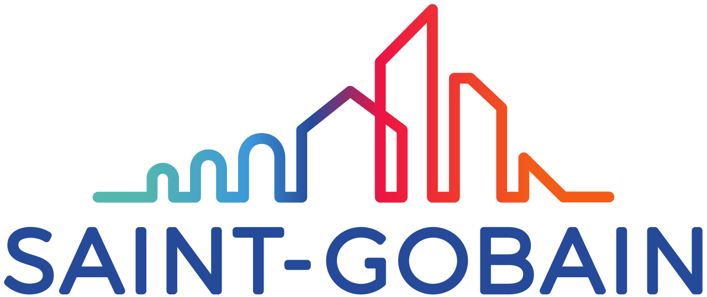
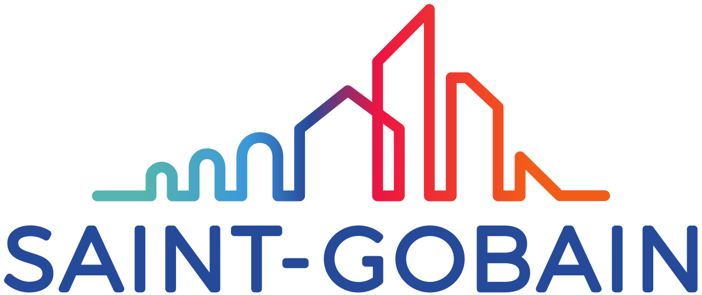

Lucina Perich
⭐⭐⭐⭐⭐
En un rubro que a veces puede ser problemático, esta empresa sorprende con la velocidad en cada etapa del proceso: para coordinar el turno, recibir el vehículo y entregar el trabajo finalizado! Realmente impecable. Los vuelvo a elegir sin dudas.
Gilda Morgante
⭐⭐⭐⭐⭐
El servicio fue puntual y muy rápido. El parabrisas quedó excelente y la atención por parte del personal es destacable. Recomiendo este lugar sin dudas.
Alfredo Terpay
⭐⭐⭐⭐⭐
Nos rompieron tres cristales del auto y los chicos lo solucionaron en 2 horas. ¡Más rápido imposible!! Cubrió todo el seguro.
Maximiliano Gruning
⭐⭐⭐⭐⭐
Impecable atención, muy conforme con el servicio. Me atendió Francisco quien me asesoró muy bien y fue muy amable.
Virginia García
⭐⭐⭐⭐⭐
Rápido y muy amables para atender, la ventana quedó perfecta, ¡gracias!
Alejandro Blanco
⭐⭐⭐⭐⭐
Muy buen servicio, coordinación de turno y respetan los horarios pactados.
Mimii Mc
⭐⭐⭐⭐⭐
Excelente trabajo !!
Diego Casadedio
⭐⭐⭐⭐⭐
Muy buena atención, excelente cómo trabajan.
Luciana López
⭐⭐⭐⭐⭐
Excelente atenci√≥n y súper rápido üëè
Mauro Forlán
⭐⭐⭐⭐⭐
Tienen mucha experiencia, se nota que saben lo que hacen. Rápidos y prolijos. Volvería sin dudar.
José Barrabés
⭐⭐⭐⭐⭐
Muy buena atención y profesional en su área. Muchas gracias.
Ariel Elías
⭐⭐⭐⭐⭐
Servicio eficiente y con puntualidad. El cambio de parabrisas quedó perfecto.
Amanda Zapata
⭐⭐⭐⭐⭐
Rápido, amorosa la gente que atiende
Macarena Vallejos
⭐⭐⭐⭐⭐
Muy buena y rápida atención !!!
Esteban T
⭐⭐⭐⭐⭐
Los volvería a elegir por la rapidez
Mailen Gonzalez Maguna
⭐⭐⭐⭐⭐
Excelente atención, fueron muy amables y rápidos.
Sebastián Gallo
⭐⭐⭐⭐⭐
Excelente TODO!!! Atención y rapidez. Muy amables todos.
Nicolás Thomas
⭐⭐⭐⭐⭐
Muy bien y rápida la atención. En pocas horas lo tienen listo. Quedó muy bien. Hice todo por el seguro, sin problema.
Ramiro Espadas
⭐⭐⭐⭐⭐
Gente muy amable y predispuesta. Fui atendido en seguida y sin turno. Me arreglaron un problema en el techo de un Fiat Uno, me entraba agua por el vidrio, me lo arregló y me tiró unos tips para mantenerlo. Muy buena onda, real que no se encuentra en cualquier lado. Eso destaco: el trato y la rapidez con que lo solucionó. ¡Gracias!


 
